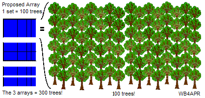
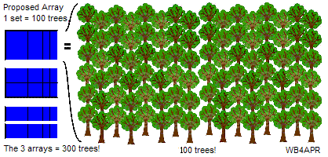

APRS Alternative Energy Experiments
APRS Alternative Energy Experiments
APRS Alternative Energy Experiments
APRS Alternative Energy Experiments


 Alternative Energy Experiments!
Download latest talk Feb 2015.
Alternative Energy Experiments!
Download latest talk Feb 2015.
This page describes my plans and frustrations starting in 2009 for installing solar and other alternative energy in Maryland. There are several other overlaping and related pages:
A lot of this page describes my efforts to get an 8kW solar array through all the legal issues in Maryland for those that live within the Critical Area (near the Chesapeak Bay). You may like to join a group of other like minded solar power experimenters called SolarDIY:
Join our DIY Email discussion group of like minded solar power experimenters.
Solar Energy is now cost effective in every state in the USA! The 2009 map (above right) showed which states had the most favorable return-on-investment (see original report). Reds broke-even when solar costs were $9 per watt. Orange at $6/watt, yellow at $5/watt and all rest of the country (white) became cost effective at $4 per watt back in 2011. Since costs are now below $4/W installed in some areas and as low as 75 cents/watt for do-it-yourselfers, now it is impossible to ignore the positive environmental and economic benefits of solar. Solar is here and is a major player in our future. See the interactive Solar map of the USA. The wind map is even more impressive!
The other 2009 chart shows the 12:1 drop in panel prices over the last decades and 3:1 drop in just the last few years. Solar panels are now less than 75 cents a watt!. The world exponential growth in production of solar PV panels and the 2010 value of 14,000 MW is not even shown full scale on this chart! The 2013 bar would hit your ceiling!
Eagles Nest: Since my original arrays faced Southeast, in Spring 2014, I added another 3 kW array facing Southwest on top of the garage. Since this new array begins to get full sun in the afternoon at the same time that the SE arrays begin to be shaded, I was able to simply connect them in parallel to the same inverter. This way, I doubled my power production with no increase in inverter cost. See full description. But to clear the roof for solar, I had to top off the SW trees and the stubs left standing seemed ideal as a support for an Eagles nest. So we built it, including camera. But missed the nesting season this year. So far, no guests... Maybe next year.
The Grid is Golden! Going Off-Grid makes NO SENSE (if you have access to it): If you don't have access to the grid, solar is a still a great source of energy... but at about 3 times the cost of grid-tie. In addition, it condems you to a life of sacrifice, and maintenance issues due to having to maintain your own batteries. If you DO have the grid, it is Golden! Never give it up! Even if you consume no net power from the grid, just using it as storage more than DOUBLEs the efficinecy of your system compared to being off grid. See why! Do not be mislead into going OFF-GRID if you have it!

Temporary Array: The 8kW of panels shown above were just propped up in the backyard on 2x4's because of my years long struggle to get county and state approvals to put some of them on a pier in the creek. They are now semi-permanently mounted in the same location becuase, now, 4 years later the state has finally dropped its prohibition to solar on piers but my system is working fine where it is. Pictures below show my 3 inverters and basement wiring.
Inverters: The image above shows the three 2.8 kW inverters. I chose to go with three separate identical 2.8 kW inverters rather than one large inverter for redundancy and reliability. Notice that all indoor high voltage solar DC wiring must be in metal conduit due to the fire hazard when HV DC is disconnected or the result of a bad connection.

Distribution Wiring: The next photo shows how the inverters are connected to the distribution panel. I combined the 240v AC outputs via three 15 amp dual breakers in a combiner box and sent the combined 240 VAC outside to the "solar Disconnect" switch by the electric meter required by the utility. Then it comes back inside and simply goes to a 50 amp breaker in my normal distribution panel shown on the right.
Solar Electric Boat: Before I finally got the law changed for solar-on-piers, my first idea was was to build a Solar Boat floating on foam insulation which contains a similar number of panels providing not only propulsion when underway, but also an additional 2.8 kW of charging power when moored. See the sketch. The structure on the boat would fold down for storage. Accessories would be stored flat while the boat was moored. . The sunward panel is kept at its high winter position while underway and the shadow side is tilted almost 180 degrees to face outward and provide a nice side to the boat, or power when the sun is on that side. When moored, all the structures would be folded down and both arrays tilt to the sun at the proper angles for summer and winter as shown here.
But for just tooling around the creek, I simply changed out the 40 Hp Johnson on this old runabout and added trolling motors and solar panels. Turns out, we have never once gone out in noon day sun. Just an hour evening cruise mostly on battery and the hassle of launching it is not worth the time.
New Solar Boat! But now, I'm still about 3 kW short of 100% solar, and since I have no more room for solar panels, I can only float them on the creek, but my pier is already max allowable size, so I'm going to make the Array into a "boat". Above you can see what it will look like "stowed", 99.9% of the time... plugged into my house (grid tied), it will give me the 3 kW of solar I need. But then put on some beer, push up the central supports, and it becomes a 16' party barge (floating deck) powered by all the trolling motors I can find at garage sales. I figure 3 kW can power 3 motors at full speed and still have 2 kW left over for the sound system...[not really] and cruise at around 3 knots around the local protected creek. Anyway, it is my next dream project. But gots' lots of honeydoos in the way first.
Solar-on-piers was illegal! Originally, my panels-on-piers idea was blocked by the Maryland Department of the Environment "because solar panels have nothing to do with the water". Apparently, the MDE considered the only approvable use of a pier to be for fishing, sailing or access to a gas burning, oil-leaking, energy consuming, noise generating, bay-polluting, air-fouling fossil fuel stink-pot boat. Anything for supporting a gas boat is OK including a GAS station pump! But putting solar panels on a pier to power a non-polluting, clean energy electric boat and routing the surplus back into the grid to provide the same improvement to the environment as 300 trees, is not! Note: (solar-on-piers is no longer prohibited at the state level, though it is still up to the local jurisdiction (which will require a variance) to get any approval (if any).
 ">
">
Above was the sketch of my floating pier application in 2009. It fit completely within the standard limits for a pier, 100 feet long, with no more than 200 sqft of additional platform and no more than two 3' wide finger piers. MDE approve the pier but denied the solar panels because the law did not allow anything on piers that was not "water access dependent". My plans were approved by Anne Arundel County, by the Army Corps of Engineers, by the Maryland Energy Administration and by both of my neighbors. Only the MDE law was in opposition to this clean energy project. Which was a paradox, because if I don't switch to solar, my electric consumption from the coal plant 4 miles down the creek will continue to pollute the Bay! See next section.

Maryland Bill HR 1266: Fortunately, in 2011 my local delegate, Kipke, authored a bill to make an exception for solar panels on piers. See HR 1266. This was presented to the Maryland House Committee on the Environment in March 2011. Only the Maryland Department of the Environment, the County representative and the delegate from Severna Park were opposed. It was killed in committee. Fortunately, MDE saw the light eventually and got the law changed, and I finally added the solar panels to the pier.
POLLUTING ALTERNATIVES: My arguments to the Judge and Legislature were to notice carefully the smokestacks and 24/7 daily emissions of the 500 MegaWatt A.H. Wagner coal-fired generator plant just 4 miles down the creek on the shores of the Chesapeake Bay. By my calculations, just my home alone consumed about 10 MegaWattHours (MWH) of electricity per year. I hoped to generate my own solar 10 MWH to eliminate completely my share of the pollution from that plant which amounts to:
22,000 lbs of Carbon Dioxide
350 lbs of sulfur dioxide
1 ounce of Uranium and Thorium
.00004 ounce of Mercury
My share of this coal-fired electricity pollution was falling on the nearby Chesapeake Bay and watershed. Even though I wanted to eliminate my contribution to this pollution by installing an 8 kW clean-solar system I was blocked by the outdated and short-sighted law of the Maryland Department of the Environment who are charged with protecting not just the water under my pier, but the air above and the soil beneath.
On 16 April 2010 a reporter Eric Hartley did an article in the Annapolis Capital Newspaper and Tim Wheeler of the Baltimore Sun did a nice story in the paper on this issue. And also on his B'More green Blog. Despite the tremendous value and growth in solar in Maryland, apparently there was still zero progress by the Marynald MDE and MEA. . Simply moving them to my yard was not easy either!!!
Plan-C Solar-in-Yard: 21 Dec 2010 - So, after 9 months and $2000 of fees, the MDE's denial of panels on piers still stood. So I designed the panels to sit on the only sunny part of my lawn down by the water as suggested by the Secretary of MDE... "on an upland alternative". (My roof is more than 50% shaded throughout all times of the day and most months of the year.) So we submitted a building permit application in September 2010 only to be immediately DISAPPROVED! Maryland does not allow anything to be built within 100' of the shoreline. So, with additional fees, I applied for a Variance. On 21 December 2010 I appeared before the Hearing Officer and presented my case. Here are some of the materials I used:
 .

.

 Environmental Benefits of Solar:
The above two images show the pollution-elimination impact of my solar project. Each
3'x 5' panel eliminates about the same amount of pollutants in a year as about 8 mature
trees remove in a year. This means a 42 panel array is equivalent to
the environmental benefits of about 300 trees compared to coal.
But even more telling is to look at not just the pollution impact of coal electricity,
but also the sheer magnitude of environmental distruction.
Environmental Benefits of Solar:
The above two images show the pollution-elimination impact of my solar project. Each
3'x 5' panel eliminates about the same amount of pollutants in a year as about 8 mature
trees remove in a year. This means a 42 panel array is equivalent to
the environmental benefits of about 300 trees compared to coal.
But even more telling is to look at not just the pollution impact of coal electricity,
but also the sheer magnitude of environmental distruction.
Unseen Impact of Coal Electricity: In the image to the far right are 4 tons of coal which is about the energy equivalent of the 10 MHhrs of energy our house requires per year. Not only do we energy-consuming-&-wasteful Americans not see this tonnage, we also do not see the 80 tons of trees, topsoil, habitat and dirt that has to be pushed off a mountain top in West Virginia and into the nearby valleys and streams just to get to that coal. This 80 tons of decimation of the environment PER YEAR for my one house is shown in the near image to the right which shows four 20 ton freight cars needed to move that debris. The next image below right is just one of the hundreds of mountains and habitat in West Virginia being destroyed for our coal energy addiction... Folks, this approach to our environment IS NOT SUSTAINABLE!
 Variance Issues: With the proponderance of benefits of my solar project
in my front yard, the County did agree that the varance was appropriate, but with one big
catch-22 provision. They required the standard mitigation for any variance in the
100' foot critical area buffer. This means that the disturbance in the
buffer area (690 square feet) must be offset with 3-to-1 or 2000 square feet of new
trees. In otherwords, I can have the solar panels in the sunny part of my yard,
but I have to plant so many
trees in compensation that my lawn becomes a forest and we are back to square-ONE,
that is, no solar access!
Variance Issues: With the proponderance of benefits of my solar project
in my front yard, the County did agree that the varance was appropriate, but with one big
catch-22 provision. They required the standard mitigation for any variance in the
100' foot critical area buffer. This means that the disturbance in the
buffer area (690 square feet) must be offset with 3-to-1 or 2000 square feet of new
trees. In otherwords, I can have the solar panels in the sunny part of my yard,
but I have to plant so many
trees in compensation that my lawn becomes a forest and we are back to square-ONE,
that is, no solar access!
The Hearing Judge rolled his eyes at that Zoning office requirement and approved the variance but without making any ruling on the mitigation issue. To date (2014) the state still does not recognize the 8-to-1 self-mitigating benefits of Solar panels to the environment.
All Panels Contribute: Once you have a NET-meter grid-tie account, remember that any panels you have laying around can also be hooked up to your home as shown above. I have an amateur radio communications trailer, and a solar trailer and a solar boat and four left over panels in my driveway. All of these intended uses for portable operation are vital but are also less than 1% of the time. By hooking these other solar panels on my property to the house via small 120v grid-tie inverters, their power the other 99% of the time is also captured to further reduce my electric bill. Since that photo was taken, the 4th panel in the picture now rests on the windshield but with a hinge assembly so it can be flipped up and over the roof panels for travel.
SOLAR PRIUS:
My first alternative energy project was a Solar Plug-in Hybrid Electric Vehicle (PHEV) built from a salvage Prius.. It had been totaled on the drivers side, but I just beat it out with a sledge hammer and coverd the bashed-in door with the white sign! This soon morphed into a Prius Field-Day Power project to combine high power solar, with thousands of watts of backup engine driven generator power in the Prius for providing emergency power for field operating events such as the annual Amateur Radio Field Day or Scouting events shown below.
.
.

PRIUS POWER: The Prius is a power station on wheels. It has a 12 volt electrical system for normal car accessories, and a 220 Volt 7 Amp-Hour Battery for propulsion assistance, two 50 kW motor-generators, a 50 Kw DC/DC converter/inverter, and a 76 Hp gas engine all integrated into a seamless power system. See more on my Solar Plug-in Prius
115 VAC Power: is provided by a 1200 Watt AC inverter running on the car's 12 volt power system (shown in the right photo above). This 1200 watts drawn from the car's 12 volt system is augmented by the 100 Amp DC/DC converter from the car's propulsion batteries and generators.


SOLAR-POWER: . Adding solar panels to the black Prius not only provided free energy to offset the cost of gas a few percent, but also provided an effective application for solar power in other places where I might need it. The solar panels shown here (and on a later white prius found totaled by a fallen tree) can provide as much as 215 peak Watts of power good for about 800 Watt hours of free electricity when parked for 8 hours in Maryland sun. (double that in Arizona!). Solar Power portability gives peace-of-mind where there is no gas or plug-in electricity available. . (more on my Solar Prius)...
When you can take solar power where you need it, then its value can be far greater than 15 cents per KWH and is cheap at any price. . Just consuming it in the Prius is an equivalent payback of 30 cents per KWH compared to the 15 cents at home. . Plus it reduces dependency on foreign oil! . A 1200 Watt AC inverter in the back (see photo above) provides plenty of AC power to go.
Emergency Solar Power Trailer: I had a few extra low voltage 20 year old solar panels so I put them on the solar trailer to the right. It contains about 300 watts of solar panels plus a deep cycle marine battery and 1200 Watt inverter. The top wood section of the trailer folds over to not only protect the solar panels during travel but to also hide them out of sight when parked or not in use. When closed, the top wood section looks like an open top trailer with about 6 inch sides. The false bottom conceals the nested solar panels.
In addition, when open, the bottom set of panels are also hinged to give access to the battery and inverter below. Plus this area provides hidden storage for extra power cords, cables and accessories. (see picture)

220 VDC POWER CONNECTORS: . A significant issue with distributing 220 VDC power is finding a safe connector that is innexpensive and readily available yet, cannot be confused with any other electrical connector. . This connector must be unique to prevent anyone from plugging in any non 220 VDC device. . The connector we came up with was a standard power plug but with a PREVENTION device to prevent inadvertant plugging in of other devices. The connector is shown above right.
A standard receptical is used, but a 3/16ths inch nylon protrusion is fixed to the center of this receptical in between the two prongs. . This blocks the use of any standard 115 VAC plug. . To make a mating compatible DC plug, a standard replacement plug is used but the center is drilled out to pass this blocking pin as shown in the photo. . On the right, this center pin protrudes into an unused, and isolated area of the hard plastic plug construction. . These connectors cost under $2 each for both the plug and the receptical.
Lightweight Power Cords: . Because of the lower current demand at 220 VDC, for the same power, a #18 zip cord can easily carry plenty of power over hundreds of feet. . In the reel to the right, the original 25 feet of bulky orange cord was removed and about 100 feet of #18 lamp cord fit nicely on this convenient spool system. . The current carrying capacity of #18 is as high as 10 amps, but I limit mine by fuses to only 5 Amps. . Again, the outlets are blocked from any inadvertant use by the uninformed by the pin-blocking system. . Only switching power supplies or other loads that can operate on 220 VDC are provided with these matching plugs.
Note: Almost all modern electronic systems that have universal power supplies (100-240 VAC) will also work just fine on 150 to 330 VDC too, since that is what the full-wave rectified AC becomes internally before it is switched to its final usable internal voltages.
Long Distance Power Distribution: Under Emergency conditions, for much longer distances, power can be distributed using a Single Wire Earth Return or SWER system. I have a 6" spool of #20 wire that is 3200 feet long takes up less room than the 100 foot spool shown. Using it and a few ground rods, a few hundred watts can be delivered over nearly a kilometer to power a typical emergency amatuer radio station.. See my APRS SWER System

220 VDC Switching Power Supplies: . The reason distribution at 220 VDC is simple is beacuse almost all modern power supplies are designed using switching regulators to elminate the large, heavy and bulky 60 Hz power transformers. These switching power supplies work on DC input that is obtained from 115 VAC or 230 VAC via an input rectifier as shown above. . These supplies when set to the 230 VAC position will also work well on 220 VDC.
.

LAPTOP Power supplies: . For simpliity, most laptop switching power supplies are also dual voltage (115/230 VAC) but to avoid the hassle of a switch, the supply is simply designed to operate on any voltage between 115 to 230 VAC directly without a switch. These supplies can often be plugged directly into 220 VDC.
250 VDC Solar Backup Power: Just because the grid goes out and the grid-tie inverter safely shuts down to protect linemen, your array still can produce your full electrical power as long as the Sun shines. Since most modern electronics will run directly on 250 to 330 VDC just as easy as they will run on 100 to 240 VAC, it makes sense to wire your solar panels for about 250-300 VDC so you can use it when the grid goes down. So instead of wiring your grid-tie array for 500 VDC to minimize wire loss, wire them in series parallel to about 250 to 330 VDC so that you can use this power directly if needed. Just about any system that has a nameplate showing it is good for 100 to 240 VAC will work on 150 to 330 VDC too! And almost all modern electronic systems come that way! See the diagram below:

Any experimentation you do with your Prius or your Electronics is at YOUR OWN RISK!
(YOUR MILEAGE MAY VARY!)...
Bottom line: .
The time is now to go solar! We cannot continue to send
billions of dollars a day overseas to buy polluting oil for our energy needs
when it is right there outside our door. Also think in terms of your total
energy footprint and consider how to integrate your transportation demands
into your own home solar system and energy needs. Its a great investment. 10% return on every dollar invested every year for life!
Bob Bruninga, WB4APR,
.
See Sitemap to over 450 of Bob's othe web pages.
.
These notes are only intended to share my results and for no other purpose!
President APRS Engineering LLC
{kind=link}
{kind=link}
{kind=link}
{kind=link}